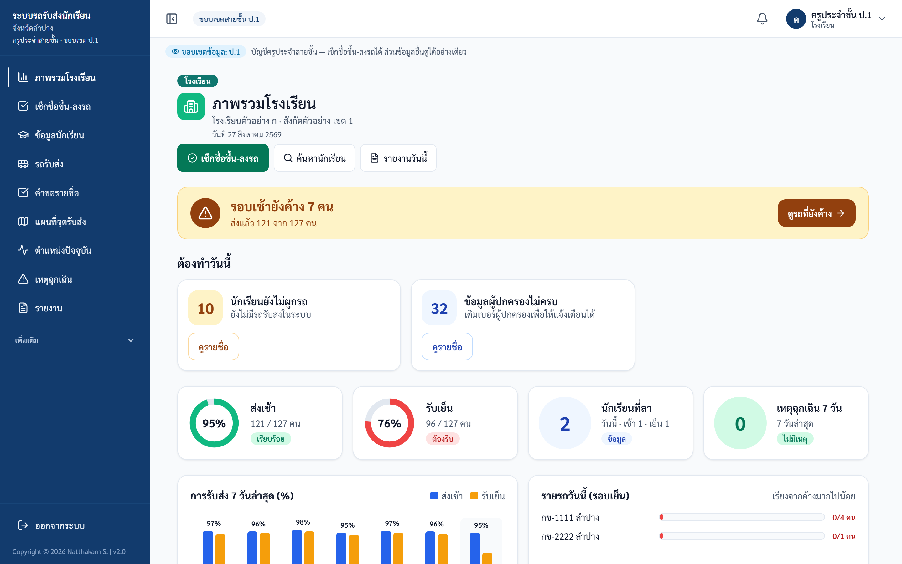
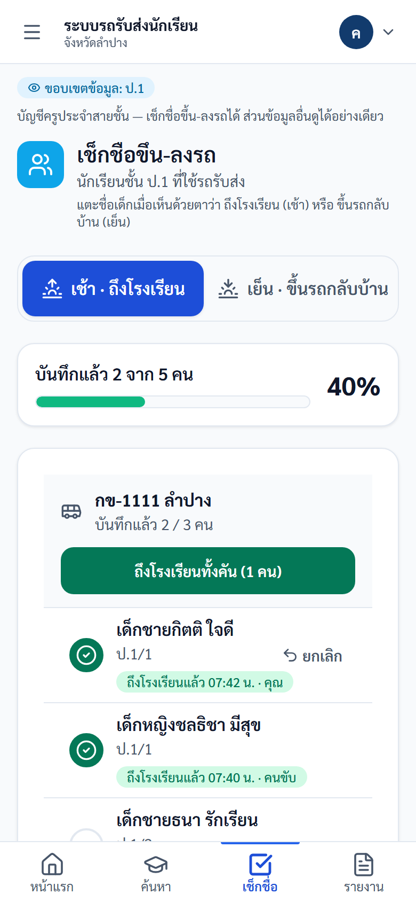
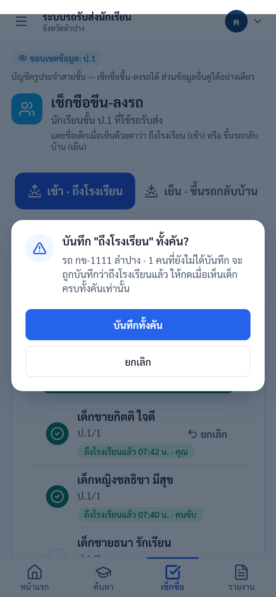
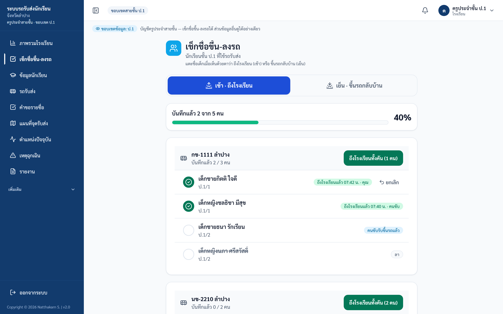

คู่มือครู: เช็กชื่อขึ้น-ลงรถ (ภาคเรียนที่ 2)
ระบบรถรับส่งนักเรียนจังหวัดลำปาง — https://schoolbuslampang.com สำหรับครูประจำสายชั้น • ใช้ตั้งแต่ 12 ตุลาคม 2569 • จัดทำ 2026-10-02 (ตรวจกับระบบจริง commit fd5d3f9)
📷 หมายเหตุภาพหน้าจอ: ภาพในคู่มือนี้ใช้ ข้อมูลตัวอย่าง (ข้อมูลจำลอง) เช่น "เด็กชายกิตติ ใจดี", "กข-1111 ลำปาง" ไม่ใช่ข้อมูลจริงของผู้ใด เมื่อใช้งานจริงจะเห็นรายชื่อนักเรียนของท่านแทน
ภาพรวม 30 วินาที
- ตั้งแต่ 12 ตุลาคม 2569 (ภาคเรียนที่ 2) ครูเป็นผู้เช็กชื่อนักเรียนที่ใช้รถรับส่งเอง ผ่านหน้า "เช็กชื่อขึ้น-ลงรถ"
- ครูบันทึกเฉพาะสิ่งที่เห็นด้วยตาที่โรงเรียน:
- รอบเช้า = เด็กถึงโรงเรียนแล้ว
- รอบเย็น = เด็กขึ้นรถกลับบ้านแล้ว
- บัญชีครูประจำสายชั้นเห็นและบันทึกได้เฉพาะเด็กในชั้นของตัวเอง
- ไม่ต้องพิมพ์เหตุผล ระบบจำเองว่าใครกด เวลาไหน
- คนขับยังเช็กชื่อในแอปของคนขับได้ตามเดิม ใครบันทึกก่อนนับคนนั้น ระบบไม่นับซ้ำ
สารบัญ
1. ก่อนเริ่ม: บัญชีและการเข้าสู่ระบบ
- ขอบัญชีครูประจำสายชั้นจากโรงเรียน — เจ้าหน้าที่ที่ถือบัญชีโรงเรียนหลักสร้างให้ได้ที่เมนู เพิ่มเติม › บัญชีครูประจำสายชั้น (ชั้นละหนึ่งบัญชี)
- เปิด https://schoolbuslampang.com ด้วยมือถือหรือคอมพิวเตอร์ แล้วกรอกชื่อผู้ใช้และรหัสผ่านที่ได้รับ
- ครั้งแรก ระบบให้เปลี่ยนรหัสผ่านก่อน — รหัสใหม่ยาวอย่างน้อย 8 ตัวอักษร และห้ามเดาง่าย
💡 ใช้บนมือถือได้สะดวกที่สุด แนะนำบันทึกหน้าเว็บไว้ที่หน้าจอหลักของมือถือ (Add to Home Screen) จะเปิดได้เหมือนแอป
โรงเรียนที่ยังไม่มีบัญชีครู ใช้บัญชีโรงเรียนหลักเช็กชื่อในหน้าเดียวกันได้ โดยจะเห็นนักเรียนทุกชั้น
2. เปิดหน้าเช็กชื่อ
เลือกทางใดทางหนึ่ง:
- มือถือ: แตะแท็บ "เช็กชื่อ" ที่แถบด้านล่าง
- หน้าภาพรวมโรงเรียน: กดปุ่มสีเขียว "เช็กชื่อขึ้น-ลงรถ" (ปุ่มแรกด้านบน)
- เมนูด้านข้าง: เลือก "เช็กชื่อขึ้น-ลงรถ"

ภาพ: หน้าภาพรวมของครูประจำสายชั้น — ปุ่มสีเขียว "เช็กชื่อขึ้น-ลงรถ" อยู่บนสุด
ด้านบนของหน้าเช็กชื่อมีปุ่มเลือกรอบ 2 ปุ่ม: "เช้า · ถึงโรงเรียน" และ "เย็น · ขึ้นรถกลับบ้าน" ระบบเลือกให้เองตามเวลา (ก่อนเที่ยงเป็นรอบเช้า หลังเที่ยงเป็นรอบเย็น) ถ้าต้องการรอบอื่นกดเปลี่ยนได้
รายชื่อแยกเป็นการ์ดตามคันรถ แต่ละคันบอก "บันทึกแล้ว x / y คน" และแถบบนสุดบอกความคืบหน้ารวมของชั้นเป็นเปอร์เซ็นต์

ภาพ: หน้าเช็กชื่อบนมือถือ — เลือกรอบ ความคืบหน้า และรายชื่อตามคันรถ
3. ขั้นตอนรอบเช้า (ถึงโรงเรียน)
- เปิดหน้าเช็กชื่อ ตรวจว่าเลือก "เช้า · ถึงโรงเรียน" อยู่
- เมื่อรถมาถึงและเห็นเด็กลงจากรถ ให้แตะที่ชื่อเด็กทีละคน วงกลมหน้าชื่อจะเปลี่ยนเป็นเครื่องหมายถูกสีเขียว และขึ้นป้าย "ถึงโรงเรียนแล้ว เวลา · คุณ"
- ถ้าเห็นเด็กครบทั้งคัน กดปุ่มสีเขียว "ถึงโรงเรียนทั้งคัน (n คน)" ที่หัวการ์ดของคันนั้น แล้วกด "บันทึกทั้งคัน" เพื่อยืนยัน

ภาพ: ระบบถามยืนยันก่อนบันทึกทั้งคัน
⚠️ กด "ทั้งคัน" เมื่อเห็นเด็กครบทุกคนจริงเท่านั้น ถ้าไม่แน่ใจว่ามีเด็กคนไหนไม่มา ให้แตะทีละชื่อแทน ระบบข้ามเด็กที่ลาและเด็กที่บันทึกไว้แล้วให้เอง
4. ขั้นตอนรอบเย็น (ขึ้นรถกลับบ้าน)
- กดเลือก "เย็น · ขึ้นรถกลับบ้าน" (หลังเที่ยงระบบเลือกให้แล้ว)
- เมื่อเห็นเด็กขึ้นรถ แตะที่ชื่อเด็กทีละคน หรือกด "ขึ้นรถกลับบ้านทั้งคัน (n คน)" แล้วกด "บันทึกทั้งคัน"
- ป้ายข้างชื่อจะเป็น "ขึ้นรถแล้ว เวลา · คุณ"

ภาพ: หน้าเดียวกันบนคอมพิวเตอร์ — ป้ายสถานะอยู่ด้านขวาของชื่อ
5. อ่านสถานะข้างชื่อเด็ก
| ที่เห็น | ความหมาย | ต้องทำอะไร |
|---|---|---|
| ✅ ถึงโรงเรียนแล้ว 07:42 น. · คุณ | ท่านเป็นผู้บันทึก (เวลาที่กด) | ไม่ต้องทำอะไร — กด "ยกเลิก" ได้ถ้ากดผิด |
| ✅ … · คนขับ | คนขับบันทึกไว้ก่อนแล้ว | ไม่ต้องทำอะไร |
| ✅ … · ชื่อครู | ครูท่านอื่นบันทึกไว้แล้ว | ไม่ต้องทำอะไร |
| ℹ️ คนขับรับขึ้นรถแล้ว (รอบเช้า) | คนขับรับเด็กขึ้นรถจากบ้านแล้ว แต่ยังไม่มีใครยืนยันว่าถึงโรงเรียน | เมื่อเห็นเด็กถึงโรงเรียน ให้แตะชื่อตามปกติ |
| ✅ ส่งถึงบ้านแล้ว (รอบเย็น) | คนขับส่งเด็กถึงจุดรับแล้ว | ไม่ต้องทำอะไร |
| ชื่อมีเส้นขีดฆ่า + ป้าย ลา | เด็กลาในรอบนี้ | แตะไม่ได้ ไม่ต้องบันทึก |
| ป้าย ไม่มีรถ (การ์ด "ยังไม่ได้ผูกรถ") | ในระบบยังไม่ได้ผูกรถให้เด็กคนนี้ | แจ้งเจ้าหน้าที่โรงเรียนให้ผูกรถ |
| วงกลมว่าง ไม่มีป้าย | ยังไม่มีใครบันทึก | แตะชื่อเมื่อเห็นเด็ก |
6. กดผิด ทำอย่างไร
- แถวที่ท่านเป็นผู้บันทึกเองในวันนั้นจะมีปุ่ม "ยกเลิก" ด้านขวา กดแล้วรายการนั้นถูกยกเลิก (ระบบยังเก็บประวัติไว้)
- ยกเลิกได้เฉพาะรายการของวันนี้ และต้องเป็นรายการล่าสุดของเด็กคนนั้นในรอบนั้น
- ถ้าคนขับบันทึกไว้ก่อนท่าน (เช่น รอบเช้าคนขับรับขึ้นรถแล้ว) แล้วท่านยกเลิกรายการของท่าน สถานะของคนขับยังอยู่ตามเดิม
- รายการที่คนขับหรือครูท่านอื่นบันทึก ท่านยกเลิกแทนไม่ได้ — ให้ผู้ที่บันทึกยกเลิกเอง หรือแจ้งเจ้าหน้าที่โรงเรียน
7. ผู้ปกครองจะเห็นอะไร
เมื่อผู้ปกครองเปิดดูสถานะบุตรหลานใน LINE จะเห็นตามที่ครูบันทึกจริง:
- รอบเช้าที่ครูบันทึก → "ถึงโรงเรียนแล้ว" พร้อมเวลา
- รอบเย็นที่ครูบันทึก → "ขึ้นรถกลับบ้านแล้ว" พร้อมเวลา
ถ้าคนขับเป็นผู้บันทึก ผู้ปกครองจะเห็น "ขึ้นรถแล้ว" (รับจากบ้าน) หรือ "ส่งถึงจุดรับแล้ว" (ส่งถึงบ้าน) ตามที่คนขับกด
ระบบไม่ส่งข้อความแจ้งเตือนทุกครั้งที่เช็กชื่อ ผู้ปกครองดูสถานะได้เองเมื่อเปิดเมนูใน LINE (ดู คู่มือผู้ปกครอง) · ถ้าผู้ปกครองถาม ให้เพิ่มเพื่อน LINE OA @943glwjf ("รถรับส่งนักเรียน") แล้วพิมพ์ "ผูกบัญชี"
8. คำถามที่พบบ่อย
| ปัญหา | คำตอบ |
|---|---|
| กดแล้วขึ้นว่า "… คนมีการบันทึกไว้แล้ว (คนขับหรือครูท่านอื่น)" | มีคนบันทึกไว้ก่อนแล้ว ระบบนับครั้งแรกครั้งเดียว ไม่ต้องทำอะไรเพิ่ม |
| ขึ้นว่า "ข้าม … คน (ลา / ไม่ได้ใช้รถรอบนี้)" | เด็กคนนั้นลา หรือไม่ได้ใช้รถในรอบนี้ ระบบจึงไม่บันทึก |
| หาชื่อเด็กไม่เจอ | อาจไม่ใช่เด็กในชั้นของท่าน หรือในระบบตั้งไว้ว่าไม่ใช้รถรอบนี้ — แจ้งเจ้าหน้าที่โรงเรียนให้แก้ข้อมูลนักเรียน (ชั้น หรือการใช้บริการเช้า/เย็น) |
| เด็กลา แต่ในรายการไม่ขึ้นว่าลา | แจ้งเจ้าหน้าที่โรงเรียนหรือคนขับให้บันทึกการลา ถ้าเด็กไม่มาโรงเรียนจริง อย่าแตะชื่อ |
| อินเทอร์เน็ตหลุด / กดแล้วไม่มีอะไรเกิดขึ้น | ระบบบันทึกก็ต่อเมื่อขึ้นข้อความ "บันทึกแล้ว … คน" เท่านั้น ถ้าไม่ขึ้น ให้ตรวจสัญญาณแล้วแตะใหม่ (ถ้าบันทึกไปแล้วจะขึ้นว่าบันทึกไว้แล้ว ไม่ซ้ำ) |
| ลืมรหัสผ่าน | ให้เจ้าหน้าที่ที่ถือบัญชีโรงเรียนหลักรีเซ็ตให้ที่เมนู เพิ่มเติม › บัญชีครูประจำสายชั้น |
คู่มือนี้จัดทำโดยตรวจกับหน้าจอและโค้ดจริงของระบบ — 2026-10-02